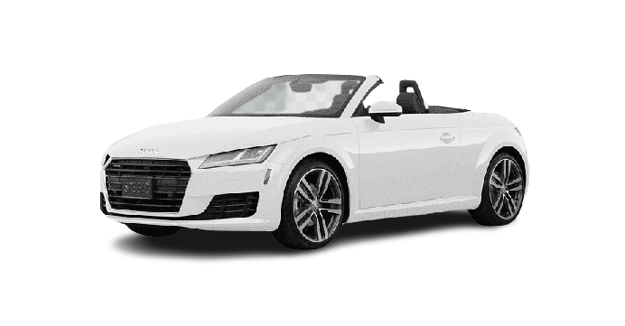

Não é apenas um carro
Isso é ESTILO
Em 2015 a terceira geração do Auti TT chegou ao mercado
com uma novidade no querito tecnológico, um painel todo eletrônico
chamado pelo fabricante de Virtual Cockpits.
O Painel agora substituido por uma tela de 12 polegadas de alta o pode ser configurado em dois modes de exibição.
